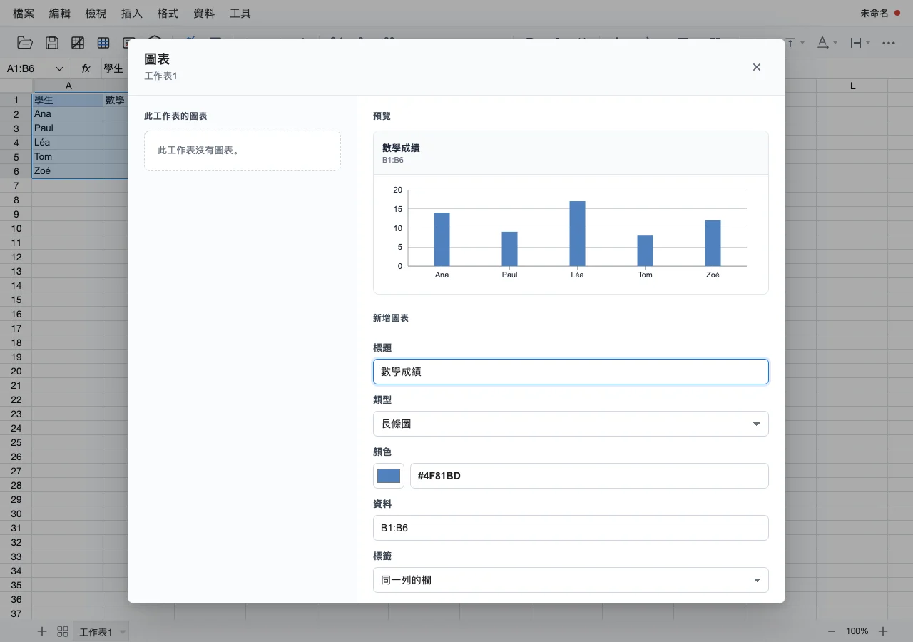
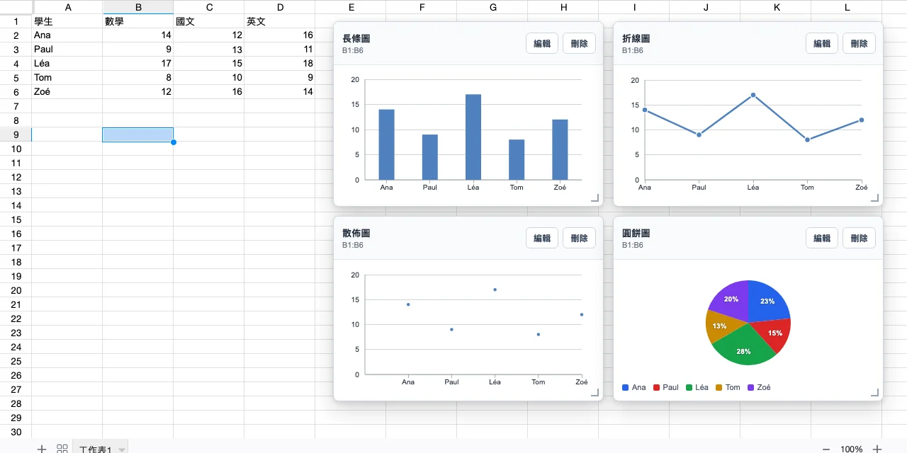
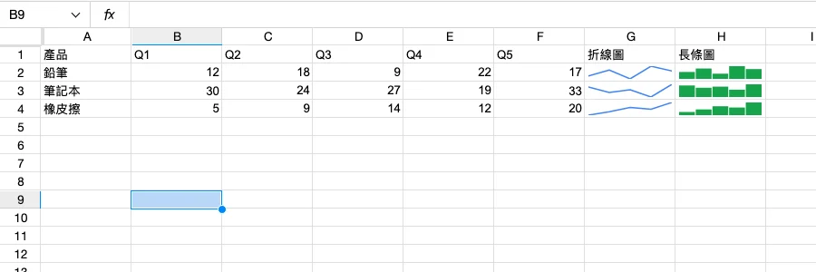

圖表與走勢圖
建立圖表
- 選擇資料。
- 或 插入 › 插入圖表。
- 選擇類型和選項；預覽隨之變化。
- 加入，然後 關閉。

| 選區 | 解釋為 |
|---|---|
| 一欄或一列數字 | 資料 |
| 兩欄 | 第一欄為標籤，第二欄為資料 |
| 兩列 | 第一列為標籤，第二列為資料 |
| 用 Ctrl 選擇的兩個分開的欄 | 同上 |
一個圖表顯示一個系列：一列或一欄資料。沒有數字的儲存格（如標題）會被忽略。
類型
| 類型 | 用於 | 標籤 |
|---|---|---|
| 長條圖 | 比較 | 在柱形下方 |
| 折線圖 | 變化趨勢 | 在橫軸上 |
| 散佈圖 | 兩個量的關係 | 若為數字，則是橫座標；否則為 1、2、3… |
| 圓餅圖 | 佔比；正值 | 在圖例或扇區上 |
最多 120 個值，餅圖 24 個。

選項
| 欄位 | 內容 |
|---|---|
| 標題 | 必填；顯示在圖表頂部 |
| 顏色 | 色彩選擇器或代碼 #4F81BD；扇區有各自的色彩 |
| 資料 | 範圍：B2:B6 |
| 標籤 | 無；同一列的欄（A）；同一欄範圍的列（1）；自訂範圍，與資料大小相同 |
| 顯示 | 數值、圖例、橫軸、縱軸、網格 |
移動、修改
- 拖曳標題條可移動圖表；拖曳右下角可調整大小。
- 編輯 重新開啟視窗，刪除 刪除圖表。視窗中還列出工作表的所有圖表。
- 圖表隨其儲存格的資料變化。
圖表以真正的圖表儲存在 Excel 檔案中，DocCells 可再次讀取。它們不會隨工作表列印。
走勢圖
SPARKLINE 函數在儲存格中繪製微型圖表。
=SPARKLINE(B2:F2)
=SPARKLINE(B2:F2, {"charttype"\"column"})
=SPARKLINE(B2:F2, {"charttype"\"line", "color"\"#dc2626", "linewidth"\2})
=SPARKLINE(B2:F2, {"charttype"\"bar", "max"\100})
選項寫在花括號中：名稱、反斜槓、值；選項之間用逗號分隔。
charttype | 圖形 | 專用選項 |
|---|---|---|
"line"（預設） | 折線 | color、linewidth、xmin、xmax、ymin、ymax |
"bar" | 堆積條形 | max、color1、color2 |
"column" | 柱形 | color、negcolor、lowcolor、highcolor、firstcolor、lastcolor、axis、axiscolor、ymin、ymax |
"winloss" | 盈虧 | 同上，但沒有 ymin 和 ymax |
通用選項：empty（"zero" 或 "ignore"）、nan（"convert" 或 "ignore"）、rtl（從右到左）。SPARKLINE 文件給出所有取值及範例。
要畫得更大，請加大列高和欄寬，或合併儲存格。